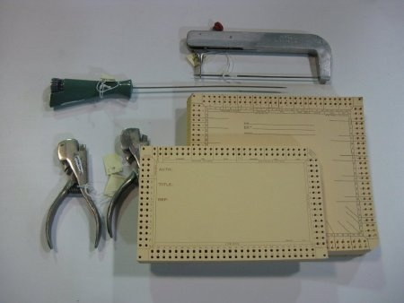
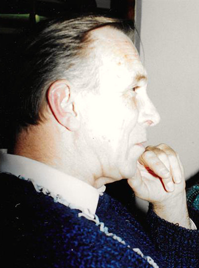
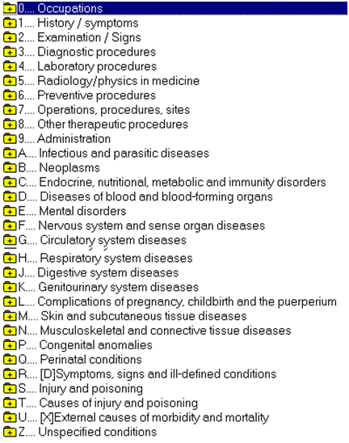
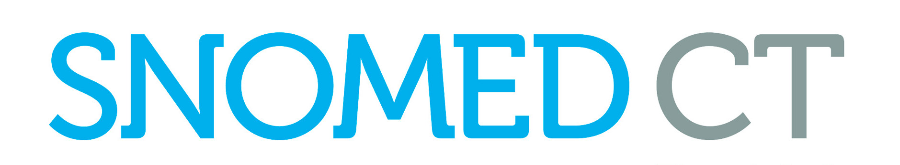
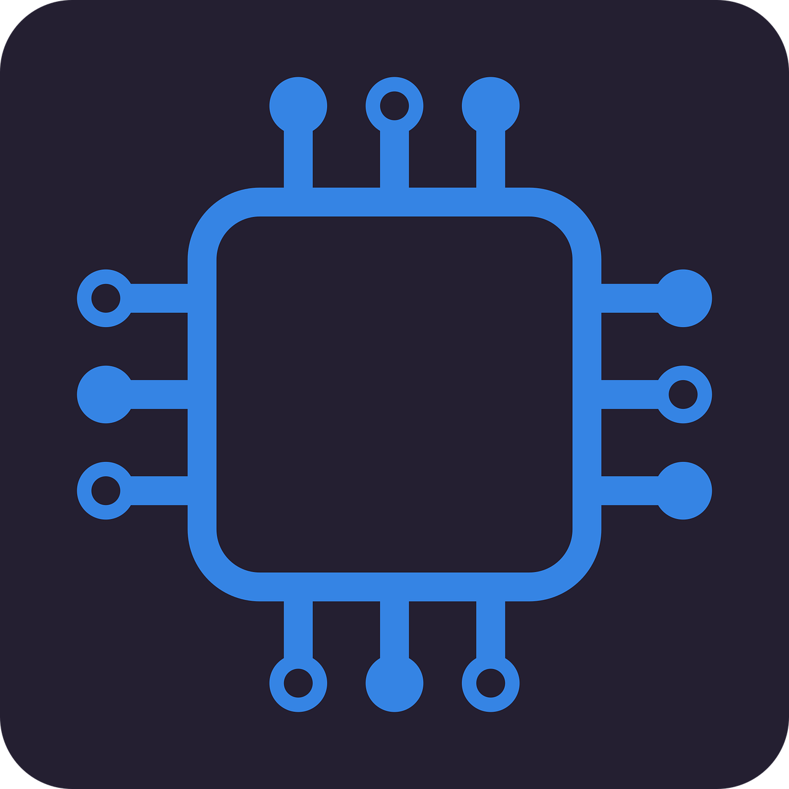

England NHS Timeline

1952
Dr Arthur Rappoport uses the McBee Manual Punch Card in pathology labs.

1969
...
1970s
A GP in the village of Egton in Yorkshire, persuaded IBM to give him a computer and a suitable programme, built a room onto his surgery to house it and created Egton Medical Information Systems (EMIS)
1980s
Dr Read, a GP in Leicestershire, realised a dictionary of medical diagnoses was needed for his computer system and set out to create it, initially using the death certification lists described above and started with a few thousand codes.
...
Systematized Nomenclature of Medicine Clinical Terms (SNOWMED CT)
1991

In 1989, British scientist Tim Berners-Lee created the World Wide Web (WWW) while working at CERN. His intention was to develop a system that would enable automated sharing of information among scientists across universities and research institutions globally.
1992
Information will be person-based. Information should focus on health. Systems should be integrated. Information will be derived from operational systems. Information will be secure and confidential. Information will be shared across the NHS
1997
The first 6 (2 more came later) Principle 1: justify the purpose(s) for using confidential information. Principle 2: use confidential information only when it is necessary. Principle 3: use the minimum necessary confidential information. Principle 4: access to confidential information should be on a strict need-to-know basis. Principle 5: everyone with access to confidential information should be aware of their responsibilities. Principle 6: comply with the law.
2001

We have achieved less because we have spent very much less and not spent it well.
2002
UK - 59% of primary care physicians New Zealand - 52% USA - 17% The original concept of the EPR being a longitudinal health record about an individual is still very valid! However, it has become entangled in organisationally bound thinking. A true patient-centric model is needed.
2002-2012
Delivering 21st Century IT Support for the NHS - paper National Program for IT (NPfIT) starts 2002 NPfIT closes down in 2012 £12.5 billion spent (167.56 billion SEK) Very little in terms of deliveries - mainly PACS (picture archiving and communication system)
2016
10 findings, the most important: Interoperability should be built in from the start Health IT systems must embrace user-centred design A successful digital strategy must be multifaceted, and requires workforce development (more to come in this afternoon’s session) Health IT is about both technical and adaptive change
2017
A Microsoft Windows Operation System exploit. Largest hit service was England and Scotland. Wales and Northern Ireland were not affected. Up to 70,000 devices – including computers, MRI scanners, blood-storage refrigerators and theatre equipment affected. Some NHS services had to turn away non-critical emergencies, and some ambulances were diverted.[ In 2018 a report by Members of Parliament concluded that all 200 NHS hospitals or other organisations checked in the wake of the WannaCry attack still failed cybersecurity checks.
2019
Talks about digital and genomics are the future. The patient must be considered to be at the centre when assessing and implementing any new technologies. (I would argue staff as well) Extensive education and training of the clinician workforce and the public, with cultivation of a cross-disciplinary approach that includes data scientists, computer scientists, engineers, bioinformaticians, in addition to the traditional mix of pharmacists, nurses and doctors.
2019
The Idea of the FCI started in the 1990s inside the Royal College of GPs Health Informatics Group (RCGP HIG) RCGP HIG gave joint representation to the Computer Group within the British Medical Association (BMA) Academy of Colleges Information Group (ACIG, from AoMRC) tried an initial attempt to create an FCI, but National Program for IT (NPfIT) waylay this. Prof Maureen Baker as chair of RCGP HIG set up a steering group that gave final push to start positive steps to form the FCI – April 2017 FCI formed by founding fellows November 2017 as a “spin off” faculty from the RCGP FCI is now an independent Charitable Incorporated Organisation - September 2019
...
...
...
...
2020
Principle 7: the duty to share information for individual care is as important as the duty to protect patient confidentiality. Principle 8: inform patients and services users about how their confidential information is used and what choice they have. There should be no surprises.)
2022-23
The mergence of NHS Health Education England, NHS Improvement, NHS X and the NHS Digital into NHS England.
2023
Controlled by the NHS “to unlock the power of NHS data to understand patterns, solve problems, plan services for local populations and ultimately transform the health and care of the people they serve.” Mixture of use cases such as: Direct care Public health Healthcare planning and research This mixed use case has complications in English law.
2024
The Faculty of Clinical Informatics (FCI) has been absorbed into the British Computer Society (BCS). The FCI will continue to operate as a special interest group within the BCS.